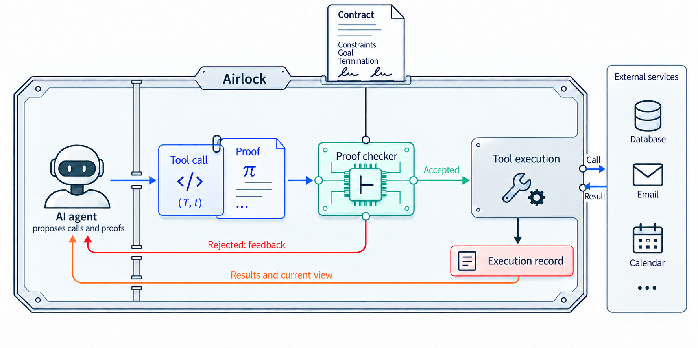

Provides a Lean 4 mechanization of the PC2 framework and its compliance theorems; agents submit Lean proofs checked by the Lean kernel before tool calls run.
Abstract
AI agents increasingly act on behalf of people or other agents, purchasing services, exchanging information and delegating work. What an agent must respect is written in instructions, policies or agreements, but text alone cannot make it comply. It may make mistakes, be redirected by what it reads, or pursue different interests. For an economy of such agents to function, parties need agreements they can rely on without inspecting or trusting one another's agents. We introduce Proof-Carrying Contracts (PC2), a framework for making agreed constraints enforceable throughout an agent's interactions with a system. Before a requested operation can run, the agent must supply a machine-checkable proof that it preserves the agreed constraints in every case allowed by its model. An execution system called the Airlock checks the proof and controls access to the operation. The parties specify the conditions to preserve, while the agent supplies the reasoning needed to justify its decisions and remains free to adapt its strategy. This avoids having to design a separate permission policy and prove that every decision it permits is safe. We prove that the constraints hold at every instant during execution, even for an adversarial agent, and identify when this implies safety in the world. Reusable capability modules provide tools and guarantees from which contracts can be constructed. PC2 provides a foundation for an agent economy whose agreements protect both those delegating work and those carrying it out.
Problem
AI agents acting for people or other parties must respect agreed constraints, but written instructions and policies cannot force them to comply. This is a problem when agents make mistakes, are manipulated by injected content, or serve conflicting interests.
Approach
Proof-Carrying Contracts (PC2) require an agent to supply a machine-checkable proof that each requested tool call preserves the contract's clauses in every case allowed by the tool's model. An execution system called the Airlock checks the proof, using the Lean kernel as the checker, and runs the operation only if the proof is accepted. Reusable capability modules supply tool models and guarantees from which contracts can be built. Conditions are also identified under which compliance of the recorded state implies safety in the real world.

Figure 1: How PC2 works. Two parties sign a contract. The agent that does the work runs inside the Airlock and keeps its usual loop of reasoning and tool calls, but each tool call carries a proof that the contract holds throughout the operation. The Airlock checks the proof before the call runs. If the proof is correct, the call is performed and its result returned; if not, nothing runs, and the a
Results
The authors prove that contract constraints hold at every instant of execution, even when the agent is adversarial, under stated assumptions such as sound proof checking. The definitions and proofs are mechanized in Lean 4 in a public repository.